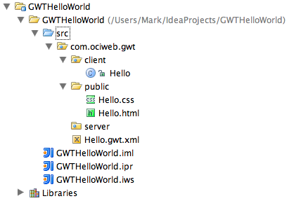
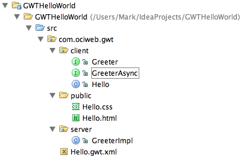
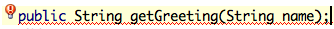
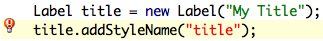
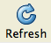

button
to add a configuration.
button
to add a configuration.Intellij IDEA is a popular Java IDE that ships with a plugin to make developing Google Web Toolkit (GWT) applications easier. The name of the plugin is "GWT Studio". See the Resources section at the bottom of this document for a link to a screencast that demonstrates using it.
Here are the steps to configure GWT Studio.
For an explanation of the "JavaScript output style" in the dialog box above, see here.
Here are the steps to create a new GWT project.
The result of these actions will be:
src/client directory createdsrc/public directory createdsrc/server directory createdsrc/client/{module-name}.java entry point createdsrc/public/{module-name}.css stylesheet createdsrc/public/{module-name}.html createdsrc/{module-name}.gwt.xml XML descriptor createdgwt-user.jar added to Libraries
Here's the IDEA project tree after creating
a project named "GWTHelloWorld",
a package named "com.ociweb.gwt",
and a GWT module named "Hello".

The generated HTML file will contain an h1 tag that displays
the name of the application. Typically you'll want to delete that.
Remote services are implemented as Java servlets.
They can be invoked from GWT client-side code
as if they were local objects.
GWT takes care of serializing data between the client and server side.
Non-primitive data types must be from classes that implement
com.google.gwt.user.client.rpc.IsSerializable.
They must also have a no-arg constructor and get/set methods
for fields to be exposed.
To create a new remote service, follow these steps.
The result of these actions will be:
src/client/{service-name}.java
synchronous interface createdsrc/client/{service-name}Async.java
asynchronous interface createdsrc/server/{service-name}Impl.java
service implementation servlet created{module-name}.gwt.xml)
Here's the IDEA project tree after creating a remote service
named "Greeter".

The synchronous interface will define a static nested class
named "App" that simplifies the code required for clients
to obtained a configured client-side service proxy.
We'll see how to use this later.
Add service methods to the synchronous interface. Warnings will be displayed to indicate that the corresponding methods do not yet exist in the asynchronous interface and the service implementation servlet.
Here's the source window after adding a new method to the
synchronous interface "Greeter". Note the light bulb.

IsSerializable,
click the warning light bulb and
select "Inherit {class-name} from IsSerializable".
For some reason this option is only displayed after the first two
issues are resolved and even then doesn't consistently appear.
To change the name of a service,
The result of these actions will be:
src/client/{service-name}.java renamedsrc/client/{service-name}Async.java renamedsrc/server/{service-name}Impl.java renamed
Modify the entry point .java file
(Bar.java in the example above)
or other client-side Java classes used by it
to add widgets to the RootPanel and register event listeners.
For more detail, see the documentation starting
here.
To invoke remote services, get an instance of the asynchronous interface as follows and then invoke methods on it.
BazAsync baz = Baz.App.getInstance();
If the client-side Java code refers to a CSS class that is not defined in the CSS stylesheet, IDEA will provide a warning and offer to define it.
Here's the source window after adding a reference to an unknown
CSS class "title". Note the light bulb.

To fix this, click the light bulb and
select "Create CSS class 'title'"
This will add the title class to the CSS stylesheet
with no formatting properties and display the newly added class
so the formatting properties can be added.
IDEA has smart CSS editing. It flags invalid formatting properties and does completion of property names and values.
See the notes on GWT internationalization here. Here are the IDEA-specific steps to internationalize strings for a GWT project.
MyConstants.
com.google.gwt.i18n.client.Constants.<inherits name="com.google.gwt.i18n.I18N"/>
MyConstants.properties.MyConstants interface for each new property.
If Refactor...Rename is used on methods in MyConstants,
the corresponding names will be changed in the property file.
Here are the steps to run the project in "hosted mode".
button
to add a configuration.Once the application is running in hosted mode, changes to the client-side code can be tested by clicking the  button in the hosted mode browser. It is not necessary to save changes in IDEA before doing this. If changes are made to server-side code, it is necessary to quit out of the hosted mode browser and rerun the project from IDEA in order to see the changes.
Here are the steps to debug a GWT application in IDEA.
Copyright © 2007 Object Computing, Inc. All rights reserved.